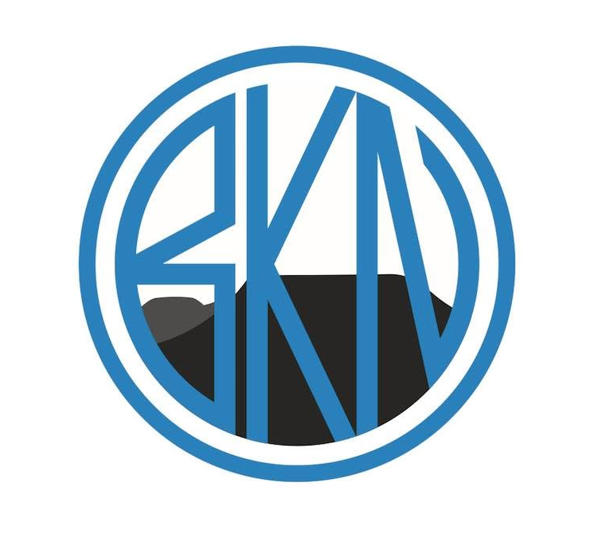

Běžecký klub
Náchod
Parta běžců z Náchoda a okolí. Tréninky, závody, společné výběhy a radost z běhání.
Novinky BKN
Aktuality z klubu
Tady budeme postupně zveřejňovat zprávy ze závodů, pozvánky a vše důležité z klubového dění.
První klubové aktuality připravujeme. Brzy se tu objeví nové příspěvky.
Běháme společně. Každý svým tempem.
Běžecký klub Náchod spojuje běžce, kteří rádi trénují, závodí a sdílejí společné zážitky. Web právě připravujeme a postupně doplníme další informace.
Naši členové
Brzy představíme členy klubu a jejich běžecké příběhy.
Tréninky
Termíny a místa společných tréninků brzy doplníme.
Závody a výsledky
Přehled výsledků a závodů připravujeme.
Naše fotogalerie
Fotografie z klubových akcí a závodů sem brzy přidáme. Úvodní ilustrační fotografii později vyměníme za skutečnou fotografii BKN.
📷 Prostor pro budoucí klubové fotografie.
Buď s námi v kontaktu
Sleduj klub na sociálních sítích, kde najdeš novinky a fotografie.
Běžecký klub Náchod
Náchod a okolí
Telefon: 721 876 513
E-mail: bknachod@seznam.cz